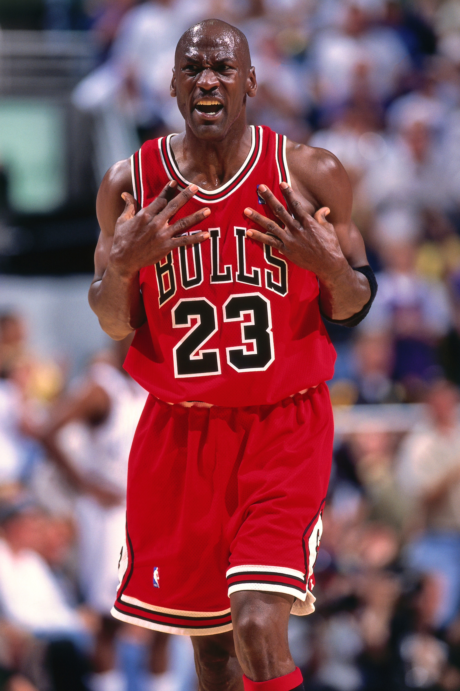

Michael Jordan
Michael Jeffrey Jordan, poznatiji po svome nadimku Air Jordan (Brooklyn, New York 17. veljače 1963.), istinska je ikona svjetskog sporta. Njegova karijera doseže vrhunce s Chicago Bullsom u NBA ligi, gdje je Jordan osvojio nevjerojatnih šest naslova prvaka tijekom devedesetih godina. Njegova prisutnost na terenu bila je gotovo magična, a svojom nevjerojatnom igrom i odlučujućim trenucima osvojio je srca obožavatelja diljem svijeta.
Lebron James
LeBron Raymone James (Akron, Ohio, 30. prosinca 1984.), predstavlja savršen spoj snage, inteligencije i nevjerojatne košarkaške vještine. Poznat kao "King James", LeBron je postao sinonim za dominaciju na košarkaškom terenu i jedan od najutjecajnijih sportaša 21. stoljeća.Njegova karijera je obilježena uspjesima, a LeBron je stasao u ne samo košarkašku zvijezdu, već i ikonu koja nadilazi sportske okvire. LeBron je osvojio NBA naslove s različitim ekipama, dokazujući svoju svestranost i sposobnost prilagodbe različitim okruženjima.

Kobe Bryant
Kobe Bean Bryant (Philadelphia, Pennsylvania 23. kolovoza 1978.), ostavio je neizbrisiv pečat u svijetu košarke kao jedan od najvećih igrača svih vremena. Njegova strast prema igri, nevjerojatna predanost treningu te nevjerojatna košarkaška vještina čine ga legendom koja će živjeti vječno u srcima obožavatelja. Poznat kao "Black Mamba", Kobe je tijekom svoje karijere proveo cijelu svoju 20-godišnju NBA karijeru u dresu Los Angeles Lakersa. Njegova sposobnost postizanja koševa u ključnim trenucima i nevjerojatan radni etos doveli su ga do pet naslova prvaka, te su ga često uspoređivali s najvećim košarkaškim imenima.

Magic Johnson
Earvin "Magic" Johnson (Lansing, Michigan 14. kolovoza 1959.) je jedan od najkarizmatičnijih i najuspješnijih košarkaša u povijesti NBA-a. Njegova nevjerojatna igra na terenu i iznimna vizija čine ga ne samo sportskom ikonom, već i liderom koji je transformirao način na koji se košarka igra.Magic je briljirao kao organizator igre, ističući se svojim nevjerojatnim dodavanjima i vođenjem momčadi.Njegova sposobnost da vidi igru na način na koji drugi nisu mogli često je dovodila do nevjerojatnih trenutaka i uspjeha za Los Angeles Lakers, s kojima je osvojio pet NBA naslova tijekom osamdesetih godina.

Shaquille O'Neal
Shaquille Rashaun O'Neal (Newark, New Jersey 6. ožujka 1972.), poznatiji kao Shaq, nije samo fizički impresivan sportski gigant, već i jedna od najprepoznatljivijih figura u svijetu košarke. Njegov izuzetan talent, dominacija pod koševima i iznimna osobnost čine ga jednim od najvećih centara u povijesti NBA-a. O'Nealova karijera započela je na sveučilištu LSU, a brzo je prešao na profesionalnu razinu košarke. Njegova fizička snaga i agilnost omogućile su mu da dominira na terenu, a uspjesi su ga pratili gdje god da je igrao. Shaq je osvojio četiri NBA naslova s Los Angeles Lakersima i Miami Heatom, a njegova prisutnost na terenu bila je ključna u postizanju tih uspjeha.